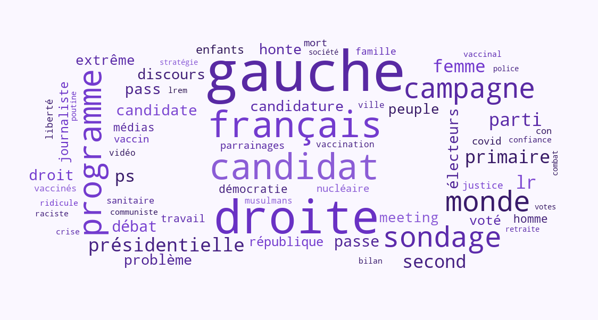

Élection présidentielle
Lecture du sentiment des français
Je te vois a récupéré plus de 3,7 millions de tweets mentionnant les candidats à l'élection présidentielle de 2022. En analysant leur sémantique, il est possible de déterminer leur degré de positivité ou négativité et d'ainsi classer les candidats selon le sentiment qu'ils génèrent.
Les candidats les plus populaires
de la semaine
1. Jean Lassalle
Très positif
2. Nicolas Dupont-Aignan
Très positif
3. Yannick Jadot
Positif
Les candidats les moins populaires
de la semaine
1. Nathalie Arthaud
Très Négatif
2. Anne Hidalgo
Négatif
3. Valérie Pécresse
Négatif
Les sujets clés de la campagne
Termes les plus fréquements utilisés par les internautes français relativement à l'élection présidentielle.

Quels candidats font le plus parler d'eux ?
Moyenne des tweets journaliers par candidat sur les dernières semaines. A eux seuls, Zemmour et Macron concentrent près de la moitié de la quantité de tweets réalisés quotidiennement.
Les Français sont plus positifs le vendredi
C'est le vendredi (et le WE) que les tweets des internautes français véhiculent le plus de positivité à l'égard des candidats.
Les Français sont plus négatifs la nuit !
Les tweets à sentiment plus négatifs au sujet des candidats ont tendance à être publiés le soir, notamment après minuit.
_
candidats
_
jours analysés
_
tweets analysés
_
mots analysés
Méthodologie
Cette étude a pour objectif d'analyser le sentiment (positif, neutre, négatif) des tweets des Français à propos de chacun des candidats aux élections présidentielles de 2022.
- Par le biais d'algorithmes d'apprentissage automatique (machine learning), Je te vois est en mesure de définir quel sentiment est rattaché à un tweet. Des moyennes par jour et par candidat permettent d'observer des tendances, corrélées aux évènements de la campagne (meetings, débats, déclarations, polémiques, ...)
- Ce travail d'analyse est mené sur des données récupérées quotidiennement depuis le 1er décembre 2021. Les données et les analyses sont actualisées tous les jours.
- Certains candidats utilisent des "armées" de militants afin d'augmenter leur visibilité sur les réseaux sociaux. Bien qu'artificielle, cette hausse de visiblité a un impact sur la perception d'un candidat par l'ensemble des utilisateurs des plateformes. Nous avons donc fait le choix de ne pas filtrer ces tweets afin de restituer l'image la plus fidèle possible de l'ensemble de l'activité.
Vous êtes journaliste ou professionnel de la politique ?
Contactez-nous pour en savoir plus sur ce tableau de bord.
Nous contacterVous êtes une entreprise avec des besoins liés à la data ?
Contactez-nous pour découvrir comment nous pouvons travailler ensemble.
Nous contacterJe te vois est un studio big data spécialisé dans l'analyse des sentiments et émotions.
Nos prestations
big data
big data
- Récupération et analyse massive de données
- Création de tableaux de bord personnalisés
- Mise en forme de données (data-vizualisation)
- Accompagnement à l'affinage de votre stratégie data
💡
à
partir de
280€
Nous contacter
280€
Nos prestations
émotions & sentiments
émotions & sentiments
- Analyse massive d'avis clients
- Mesure de la réputation d'une marque
- Réalisation d'études et de veille thématique
- Analyse de résultats de sondages
- Evaluation de la qualité de communautés en ligne
- Compréhension et identification des painpoints de l'Expérience Client
- Définition d'une stratégie de récupération des feedbacks client (fréquence, outils, etc)
💡
à partir de
750€
Nous contacter
750€